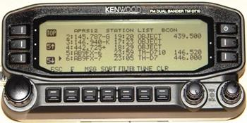

APRS TRACKER Manifesto:
Welcome to APRS!
Bob Bruninga, WB4APR See: www.aprs.org/localinfo.html
Thank
you for investing in this exciting aspect of the Ham radio hobby. You will find APRS as a great real-time
communications and information distribution system that keeps everyone informed
of all surrounding APRS and other Ham Radio activity and that also facilitates
communications by data and voice among all members of the APRS network.
In
that regard, APRS was intended to be a two-way communications system between
operators. Although you have purchased
an APRS “Tracking Device” which is sometimes connected to only a transmitter,
you can still fully participate as an operator in the APRS net. The best way to do that is to connect your
APRS tracking device to a transceiver and although the receiver is not used for
data, the receiver and speaker with a CTCSS tone can still be fully used as an
APRS “intercom” channel for back-channel voice coordination and radio-proximity
detector. In effect, you get dual use
out of the radio (Data and Voice)!

As
noted on the web page above, placing the frequency of your voice receiver in
the Beacon Text of your tracker, everyone that receives your position report
can also then see how to contact you, and include you in the voice net as
needed. If you use the proper format
then your frequency will show up on other mobile displays as shown here. This way, other operators can then easily
tune to your calling channel and make needed contact. Although any voice calling channel can be
used, we recommend using a radio with CTCSS-100 and tuned to the APRS data
channel (144.39 in the
Including
your own voice monitoring frequency in all of your packets is just part of the
use of the APRS frequency
parameter. Under the New-N Paradigm, the
locally recommended voice repeater for all travelers is also being transmitted
by most digipeaters as an object. This
informs travelers in the area, what frequency is useful to them right there,
right now. These objects show up in the
station list of all APRS stations for easy visibility as shown above.
If
your tracker device has its own transmitter and no receiver, you can still
include your monitoring voice contact frequency, paging number, email address
or other call-back info in a periodic beacon to facilitate communications with
you even if you are not onboard. If not
in every packet, then once every 10 minutes is suggested. This meets the
objectives of the Universal Ham Radio Text Messaging/contact initiative. See: www.aprs.org/aprs-messaging.html
Using
Voice Alert, frequency beacons and local frequency objects fulfill the
objective in APRS of facilitating communications between all operators in any
situation.
Enjoy! Bob,
WB4APR